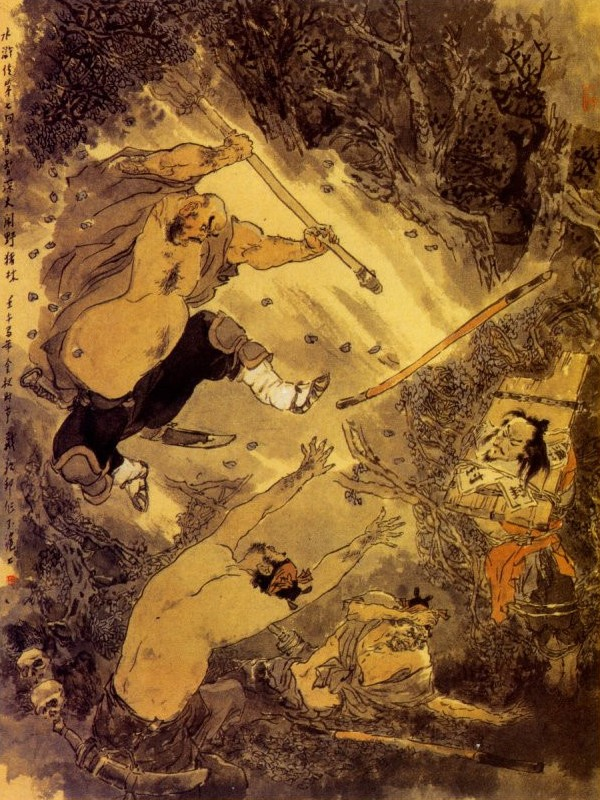
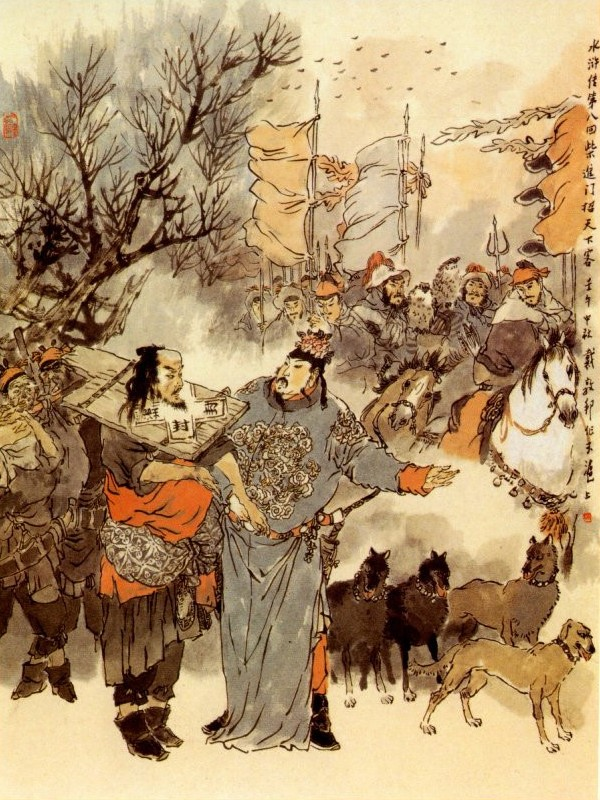
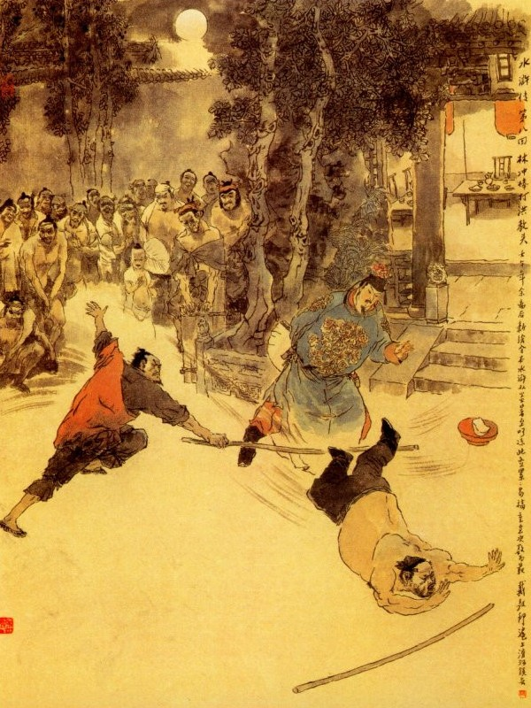

Khi đó Tiết Bá giơ gậy nhằm giữa đầu Lâm Xung để đánh thì bỗng dưng thấy một người thét như sấm ở đằng sau rồi thấy thanh thiền trượng đánh vút một cái bắn phăng ngay gậy của Tiết Bá đi lăng lắc đâu mất, đoạn rồi có một vị hòa thượng ở đâu hiện thân đến mà quát rằng:
- Tao ở rừng này, nghe hai chúng bây nói đã lâu.
Nói đoạn múa thiền trượng giơ giới đao, toan đánh hai công sai. Bấy giờ Lâm Xung mở bừng mắt ra trông thấy vị hòa thượng mình mặc áo trắng, một tay cầm giới đao, một tay cầm thiền trượng thì nhận ra ngay là Lỗ Trí Thâm, liền kêu lên rằng:
- Sư huynh hãy khoan tay đừng đánh vội, để tôi nói câu này đã.
Trí Thâm nghe nói, dừng tay đao trượng rồi trừng hai con mắt nhìn Đổng Siêu, Tiết Bá bằng một cách nghiêm khắc đáng kinh. Hai anh ấy thấy vậy thì đứng nhũn người ra, không còn cựa quậy được nữa. Lâm Xung nói:
- Việc này là tại Cao Thái Úy bảo Lục Ngu Hầu sai họ giết tôi, chứ không phải tội tự họ đâu? Nếu sư huynh giết họ thì oan cho họ lắm!
Trí Thâm liền quay sang cắt thừng trói ra mà dắt Lâm Xung dậy rồi kể chuyện rằng:
- Từ khi tương biệt ở chỗ mua bảo đao rồi, sau nghe bác bị Cao Cầu ức hiếp, bắt đi đày ở Thương Châu, tôi liền đến phủ Khai Phong để tìm mà không gặp. Đến lúc biết tin bị giam ở phòng Sứ Thần thì tôi đã toan đến đấy, song lại thấy có một tên tửu bảo, đi tìm hai đứa công sai này, để đến bàn thì thầm, to nhỏ với một người nữa tôi liền có bụng ngờ, chắc là nó toan hại bác, cho nên phải cố đi theo. Tối hôm qua vào hàng cơm, thấy hai thằng ăn mày này nó làm trời làm đất, nhúng chân bác vào chậu nước sôi, tôi cũng biết cả, đã tính giết ngay lúc bấy giờ, nhưng lại sợ hàng quán đông người không tiện, cho nên phải thôi. Sáng hôm nay lúc đầu trống canh năm, bác sắp ra đi tôi đã đến đây trước, đoán chắc đến đây tất nhiên quân này nó hại bác thì tôi sẽ giết đi, ai ngờ quả nhiên thế thực. Giá tôi không sớm ở đây thì tính mạng bác còn đâu với nó được nữa! Bác cứ yên lặng để tôi giết phăng chúng nó là xong.
- Thôi bây giờ sư huynh đã cứu được tôi rồi, còn giết người ta làm gì nữa.
Trí Thâm quát bảo hai tên công sai rằng:
- Nếu ta không nể anh em bạn thì ta xé xác chúng bay ra làm mắm đấy.
Nói xong bỏ giới đao vào bao và ra lệnh rằng:
- Hai thằng ăn mày này phải dắt bạn ta đi theo ta mới được.
Hai tên công sai nghe nói cúi đầu cúi cổ nhặt lấy khăn gói cho Lâm Xung rồi hai người lại cùng đỡ Lâm Xung, để đi theo Lỗ Trí Thâm. Khi ra khỏi rừng được ba bốn dặm đường, thấy có một hàng rượu con con ở đó, Trí Thâm liền dẫn bầy người vào nghỉ. Đoạn gọi tửu bảo lấy bánh và rượu thịt lên để cùng nhau ăn uống. Bấy giờ hai tên công sai mới khép nép mà hỏi rằng:
- Bẩm sư phụ, người trụ trì ở chùa nào, chúng con chưa được biết?
Lỗ Trí Thâm cười mà đáp rằng:
- Các anh hỏi ta làm gì, định về tâu nộp với Cao Cầu phải chăng? Ta nói thiệt, ai sợ hắn, chứ ta đây không sợ gì đâu? Nếu ta có gặp hắn thì ta cũng đãi hắn mấy trăm cái thiền trượng này đã.
Hai tên công sai nghe vậy thì câm như miệng hến, không dám nói năng gì nữa. Được một lát cơm rượu xong rồi, liền cùng tính trả tiền hàng mà cùng nhau trở ra, Lâm Xung hỏi Lỗ Trí Thâm rằng:
- Sư huynh định đi đâu bây giờ?
Trí Thâm đáp rằng:
- Giết người phải lấy máu, cứu người thì phải tới nơi, vậy tất nhiên tôi phải đưa bác sang đến tận Thương Châu, chứ không đành lòng mà để bác đi một mình được.
Hai tên công sai nghe thấy vậy thì cay đắng trong lòng, chắc rằng mưu kế của mình không thi hành được nữa, nhưng cũng đành chịu vậy thôi. Từ đó các cụ nhất nhất theo ở Trí Thâm, bảo đi thì đi, bảo đứng thì đứng, tử tế ra thì mắng nhiếc, láo xấc ra thì roi vọt, không anh nào dám ho he gì cả. Cách ít lâu thuê được cỗ xe, Trí Thâm để cho Lâm Xung ngồi trên xe mà mình đi đất với hai tên công sai. Trong khi đi đường, Lỗ Trí Thâm thường mua các thứ rượu thịt cho Lâm Xung ăn và cả hai tên công sai được ăn ké vào đó. Duy mỗi khi đến hàng quán để nghỉ thì Trí Thâm lại bắt hai tên công sai phải thổi cơm, hầu hạ luôn cạnh không anh nào dám cưỡng. Thỉnh thoảng hai anh lại bàn thầm với nhau rằng:
- Việc này, khi ta trở về đến Đông Kinh mà Cao Thái Úy hỏi đến thì ta biết nói làm sao cho được?
Tiết Bá bàn định một kế rằng:
- Mới đây nghe nói ở vườn rau Giải Vũ thuộc chùa Tướng Quốc, có một lão sư mới đến, tên gọi Lỗ Trí Thâm, có lẽ chính là anh này đây hẳn. Nếu quả vậy thì khi ta trở về, ta cứ nói thực với Thái Úy rằng: "Chúng tôi định giết Lâm Xung ở rừng Dã Trư, nhưng chẳng may bị lão sư ấy nó ngăn cản mà nó lại đưa sang đến tận Thương Châu, cho nên không sao mà hạ thủ được". Đoạn rồi hai ta trả lại 10 lạng bạc cho Lục Khiêm cũng được chứ gì. Hai anh bàn định cẩn thận với nhau rồi lại chăm chăm theo Lỗ Trí Thâm mà không hề có một điều gì cưỡng trái.
Khi đi được 17, 18 ngày đường, Lỗ Trí Thâm dò biết là ở đó cách Thương Châu còn có dăm bảy dặm nữa mà lại toàn là nơi đông đúc sầm uất, chứ không vắng vẻ như trước thì trong bụng đã hơi yên vững, liền tìm vào một chỗ ngồi nghỉ và bảo với Lâm Xung rằng:
- Từ đây đến Thương Châu đường xá đã đông vui mà cũng không còn xa mấy nữa, vậy tôi xin từ biệt bác, để rồi khi khác sẽ gặp nhau.
Lâm Xung bồi hồi cảm tạ mà nói rằng:
- Bây giờ sư huynh có về thì xin nói chuyện đi đường cho nhà tôi được biết, còn tôi đây nếu trời còn cho sống thì tất nhiên có ngày trả nghĩa sư huynh.
Trí Thâm lại lấy ra mấy lạng bạc đưa cho Lâm Xung và lại đưa cho đám công sai mấy lạng mà dặn rằng:
- Lũ bây đáng lẽ ta chém cổ đi rồi, nhưng vì ta nể mặt anh em bạn mà tha cho đấy, vậy từ đây trở đi, chúng bay phải nên cẩn thận, đừng trở bụng chó má ấy ra nữa mà nguy hiểm đến thân nghe chưa?
Hai tên công sai giơ tay ra đỡ lấy tiền và đáp rằng:
- Bẩm ngài, đó là quan Thái Úy bắt như vậy, chứ chúng tôi đây có bao giờ đem lòng tàn nhẫn mà cư xử với ai!
Nói đoạn vừa mới toan chia tiền với nhau thì Lỗ Trí Thâm lại trừng mắt nhìn hai tên công sai rồi lại trông sang gốc cây thông gần đó mà hỏi rằng:
- Đầu chúng bây có rắn bằng cây gỗ thông này không?
- Bẩm ngài, đầu chúng con là thịt da cha mẹ sinh thành, có đâu mà rắn như thế được.
Lỗ Trí Thâm phăm phăm vác cây thiền trượng đánh vào gốc thông một cái thật mạnh, sâu vào đến hai ba tấc gãy răng rắc xuống một lượt rồi quay ra thét bảo hai tên công sai rằng:
- Bây trông đó, nếu mà mang tâm phản trắc thì ta cho đầu chúng bây cũng như cây thông ấy.
Lũ công sai thấy vậy thì hoa mặt choáng người mà không dám thở nữa.
Đoạn rồi Trí Thâm đeo đao vác trượng, từ biệt Lâm Xung mà quay trở về. Lâm Xung thấy Trí Thâm quay về rồi, liền bảo đám công sai rằng:
- Bây giờ chúng ta đi đi thôi.
Bấy giờ hai tên công sai vừa tỉnh hồn, định mắt lại mà hỏi Lâm Xung rằng:
- Gớm, nhà sư ấy sao mà khỏe đến thế, đánh gãy hẳn cây thông dễ như bỡn vậy.
- Thế đã thấm vào đâu, đến như cây liễu ở chùa Tướng Quốc ông ấy còn nhổ được cả gốc lẫn rễ lên nữa.
Đổng Siêu, Tiết Bá nghe nói lại trông nhau, lắc đầu le lưỡi mà kinh sợ vô cùng. Đoạn ba người cùng kéo nhau đi. Trưa hôm ấy đến một tửu điếm ở gần bên cạnh đường cái quan, Lâm Xung bèn mời Đổng Siêu, Tiết Bá vào nghỉ. Khi vào tới nơi, thấy hai ba tên tửu bảo rót rượu mang thịt, đưa hến nơi này đến nơi khác mà chỗ Lâm Xung ngồi thì không ai nhìn đến. Lâm Xung đợi mãi một hồi lâu cũng không thấy gì cả, lấy làm sốt ruột, liền đập tay xuống bàn mà hỏi rằng:
- Chủ nhân đâu? Ngươi khinh ta là kẻ phạm nhân mà không thèm tiếp đến là nghĩa lý gì? Ta có ăn quịt của nhà ngươi đâu?
Chủ nhân nghe nói liền đáp:
- Các ngươi không biết, tôi có lòng tử tế đãi các người đấy.
- Tử tế gì? Khách đến không thèm tiếp, còn gì là tử tế.
- Để tôi nói cho mà nghe: Trong thôn kia có một ông đại tài chủ, tên gọi là Sài Tiến, ở đây thường gọi là Sài Đại Quan Nhân mà đám giang hồ thì vẫn gọi là Tiểu Đoàn Phong Sài Tiến, vốn là con cháu Sài Thế Tôn nhà Đại Chu khi trước. Từ khi Trần Kiều binh biến nhường ngôi cho Thái Tổ rồi. Vũ Đức hoàng đế mới sắc phong cho thề thư thiết khoán ở nhà ông ta, vì thế mà không ai dám khinh rẻ. Ông ta thích chiêu hào những hảo hán trên đời, cho nên trong nhà lúc nào cũng nuôi đến năm bảy mươi người ở đó! Lại thường dặn ở nhà tôi, nếu thấy những người nào mắc tội đày ải qua đây thì đưa vào để ông ta giúp đỡ, bởi vậy nên tôi không dám bán rượu cho các người, sợ khi uống rượu đỏ mặt vào mà tới nơi thì ông ta lại cho là phong lưu mà không giúp đỡ nữa chăng!
Lâm Xung nghe nói quay lại bảo với Đổng Siêu, Tiết Bá rằng:
- Khi tôi còn làm Giáo Đầu ở Đông Kinh, vẫn thường nghe thấy tiếng Sài Đại Quan Nhân, nhưng ngày nay mới biết là ở đây, vậy bất nhược ta thử vào đấy xem sao?
Đổng Siêu, Tiết Bá nghĩ một lát rồi nói:
- Như vậy có thiệt hại gì đến ta mà không đi.
Nói đoạn liền thu thập hành lý mà đến hỏi chủ hàng rằng:
- Nhà Sài Đại Quan Nhân ở chỗ nào, xin chỉ giúp cho, chúng tôi đương tìm đến đấy.
Chủ hàng trỏ về phía trước mặt mà bảo rằng:
- Cách đây độ hai ba dặm đường, đi qua cái cầu đá lớn rồi đến một chỗ góc đường gần quanh thì có một nơi trang viện lớn, tức là ở đó.
Lũ Lâm Xung bèn tạ chủ nhân rồi cùng nhau theo lối ấy mà đi. Quả nhiên đi độ 2, 3 dặm đường thì đến một tòa cầu đá lớn, đoạn rồi thấy đường rộng thênh thang, chẳng khác gì một nơi quan lộ, gần trông có một đám tơ liễu xanh rì, hiện ra một tòa trang viện rất to, chung quanh toàn là hào rãnh đào sâu mà trên bờ trồng tinh dương liễu. Ba người dẫn nhau đi theo con đường lớn, vòng quanh sang mặt tả thì đến một nơi cầu nhỏ cổng trong.
Bấy giờ có ba bốn tên trang khách, đương ngồi hóng mát ở đó. Lâm Xung cùng hai tên công sai liền vái chào mà nói rằng:
- Dám chào các ông, xin phiền các ông vào nói với Quan Nhân rằng: "Có tên Lâm Xung là phạm nhân ở Đông Kinh qua đây, xin chào yết kiến".
Lũ trang khách nghe nói thì đáp rằng:
- Các ông hôm nay thực là đen lắm, giá có gặp Quan Nhân ở nhà thì ít ra cũng phải có rượu thịt tiền nong để đãi, nhưng tiếc vì ngài lại mới đi săn sáng hôm nay rồi.
- Bẩm ngài đi săn bao giờ mới về?
- Cái đó không biết đâu là chừng, chỉ sợ ngài lại đi sang nghĩ bên Đông Trang thì khó lòng gặp được!
Lâm Xung thở dài mà than rằng:
- Nếu vậy thì chúng tôi kém phúc đức quá! Thôi, xin chào các ông, chúng tôi đi vậy!
Nói xong ba người thui thủi đi ra.
Dặm nghìn nước thẳm non xa,
Tiền đồ man mác ai là tương tri?
Lạ thay trong lúc gian nguy?
Cơn đen đen cả đường đi lối về.
Bấy giờ trong bụng Lâm Xung hơi có phần buồn bã, trách thương cho số phận long đong, đi đến đâu cũng lỡ làng không gặp. Chợt đâu vừa đi được nửa dặm đường thì thấy một bọn đương cưỡi ngựa ở quãng rừng xa trở lại, đằng trước có một người sang trọng vào trạc ngoài 30 tuổi, lưng đeo một cây cung, một túi tên, cưỡi con ngựa trắng lông quăn mà dẫn lũ sau đi về trang viện.
Lâm Xung thấy vậy trong bụng đã đoán chắc là Sài Đại Quan Nhân về đó, song còn ngờ ngợ chưa dám hỏi ngay.

Đương lúc trù trừ chưa quyết thì đã thấy người ấy phóng ngựa đến trước mặt Lâm Xung mà hỏi rằng:
- Người đeo gông là ai đó?
Lâm Xung thấy hỏi liền cúi đầu chào mà đáp rằng:
- Tôi là Cấm Quân Giáo Đầu Lâm Xung ở Đông Kinh, bị quan Cao Thái Úy ức hiếp, bắt đi đày sang Thương Châu, nhân qua đây thấy nói có quan Sài Đại Quan Nhân là tay hảo hán, hay chiêu hiền nạp sĩ xưa nay, cho nên muốn vào yết kiến, nhưng chẳng may lại không được gặp. Lâm Xung vừa nói dứt lời thì người kia vội nhảy xuống ngựa đi gần đến tận nơi mà nói rằng:
- Nếu vậy thì tôi xin lỗi, không nghênh tiếp được ngài, xin ngài tha thứ cho.
Nói xong cúi rạp xuống đất mà lạy, đoạn rồi dắt Lâm Xung đi vào trang viện.
Khi vào tới nhà khách, Sài Tiến mời Lâm Xung ngồi chơi rồi nói:
- Chúng tôi được nghe danh Giáo Đầu đã lâu, nay ngài lại đến đây cho tôi được thừa tiếp thì thực là thoả lòng khát vọng vô cùng.
- Lâm Xung tôi vẫn biết tiếng Quan Nhân, khắp trong bốn bể ai ai cũng có lòng kính phục, nhưng hiềm vì chưa có dịp nào mà bái yết tôn nhan, nay vì bước oan khổ lưu ly mà lại được tới đây để hầu ngài như thế thì thực may lắm.
Sài Tiến khiêm tốn hồi lâu rồi gọi trang khách sai dọn rượu để uống. Lâm Xung có ý từ chối mà rằng:
- Quan Nhân có lòng hạ cố như thế là quá đáng, còn đâu dám phiền nhiễu làm chi!
Sài Tiến nhất định không nghe, đáp rằng:
- Mấy khi Giáo Đầu đến đây, có lẽ nào lại vô lễ như thế được.
Nói đoạn thúc trang khách lấy rượu lên, rót luôn ba chén mời Lâm Xung. Lâm Xung uống ba chén, lại rót ba chén để tạ lại Sài Tiến. Đoạn rồi Sài Tiến tháo cung bỏ tên, đưa người nhà cất đi mà ngồi tiếp rượu Lâm Xung. Sài Tiến nhường Lâm Xung ngồi khách vị mà tự mình ngồi chủ vị, còn hai tên công sai thì ngồi dưới Lâm Xung. Được một lát mặt trời đã lặn non tây, người nhà lại bày các thực phẩm la liệt trên bàn, nào là hải vị sơn hào, không gì là không có. Sài Tiến cất chén mời Lâm Xung uống rượu, lấy các món nhắm rồi giở chuyện giang hồ, đàm luận với nhau rất là vui thú. Đương khi chén tạc chén thù thì thấy trang khách vào báo rằng:
- Có Hồng Giáo Sư sang chơi.
Sài Tiến quay bảo trang khách rằng:
- Bây mời vào đây, uống rượu một thể cho vui.
Đoạn rồi sai người kê thêm bàn ghế, để ngồi tiếp vào đó. Khi Hồng Giáo Sư vào, Lâm Xung đoán chắc là thầy dạy Sài Tiến liền đứng dậy cúi đầu mà chào rằng:
- Tôi Lâm Xung kính chào Giáo Sư.
Hồng Giáo Đầu nghe thấy Lâm Xung chào thì cứ lặng yên không chào lại mà cũng không thèm để mắt tới. Lâm Xung thấy vậy thì cúi mặt xuống mà không dám ngẩng đầu lên. Sài Tiến trỏ vào Lâm Xung mà bảo Hồng Giáo Đầu rằng:
- Ông này là Lâm Xung Giáo Đầu, dạy 80 vạn cấm quân ở Đông Kinh đấy, xin giới thiệu để ngài biết.
Lâm Xung thấy Sài Tiến nói xong, liền cúi rạp xuống đất, lạy chào Hồng Giáo Sư. Bấy giờ Hồng Giáo Sư cũng không đáp lễ mà chỉ nói một câu rằng:
- Thôi đừng lạy nữa.
Sài Tiến thấy vậy, trong lòng có ý không thích, song cũng không dám nói ra, Lâm Xung lạy xong rồi, nhường Hồng Giáo Sư ngồi lên trên mà lui xuống ghế dưới, Hồng Giáo Đầu cũng cứ ngồi phăng ghế trên mà không khiêm tốn một chút gì cả, Sài Tiến thấy vậy, trong lòng lấy làm khó chịu, không bằng lòng chút nào cả, song không muốn nói ra. Hồng Giáo Sư ngồi một lát rồi mới hỏi Sài Tiến rằng:
- Hôm nay làm sao Đại Quan Nhân lại hậu đãi một kẻ đi đày như thế?
Sài Tiến nói:
- Ông này là Giáo Đầu dạy 80 vạn Cấm binh ở Kinh Sư, chứ chẳng phải là người thường đâu?
- Chết nỗi! Đại Quan Nhân lầm rồi, vì ngài hay thích chơi võ nghệ, cho nên bao nhiêu bọn tù tội qua đây cũng nói hươu nói vượn, mượn tiếng Giáo Đầu mà kiếm chén đó thôi, Quan Nhân tưởng họ là thực hay sao?
Lâm Xung nghe vậy, cứ ngồi lặng yên, không nói gì hết cả. Sài Tiến bảo Hồng Giáo Đầu rằng:
- Người ta giả mạo sao được, ông chớ coi khinh nữa mà.
Hồng Giáo Đầu nghe đến đó thì đứng phắt ngay dậy mà nói rằng:
- Tôi chẳng khinh ai, nhưng nếu hắn có dám đi với tôi một bài gậy thì mới có thể biết là Giáo Đầu hay không được.
Sài Tiến cả cười mà rằng:
- Tốt lắm! Tốt lắm! Lâm Võ Sư nghĩ sao?
Lâm Xung ra dáng khiêm tốn mà đáp rằng:
- Chúng tôi có đâu dám thế.
Hồng Giáo Đầu thấy vậy, đoán chắc là Lâm Xung không biết gì, liền làm bộ thách thức già lên. Bấy giờ Sài Tiến vừa phần muốn xem võ nghệ của Lâm Xung, có giỏi hay không, vừa phần thì cũng muốn Lâm Xung đánh đổ Hồng Giáo Đầu, để cho hết múa mép, liền nói lên rằng:
- Được lắm! Hãy xin uống rượu đã, để chốc nữa trăng mọc rồi sẽ hay.
Nói xong hai người cùng ngồi uống rượu. Khi uống được năm bảy chén thì bóng Nga đã vằng vặc rạng soi trước cửa, Sài Tiến liền đứng dậy mà nói rằng:
- Bây giờ hai vị Giáo Đầu, thử đấu một ngọn xem sao?
Lâm Xung nghe nói cũng muốn đấu chơi, nhưng lại e khi đánh ngã ông Giáo Sư ấy thì dối với Sài Tiến có điều gì không tiện, nên đành phải ngồi im, không dám nói gì cả. Sài Tiến biết Lâm Xung có ý trù trừ, liền nói lên rằng:
- Hồng Giáo Sư cũng mới đến ở đây, song vùng này không có ai là địch thủ, vậy Lâm Võ Sư đấu thử xem sao? Không có điều chi mà ngại! Vả tôi cũng muốn nhân đây được xem võ nghệ của các ngài một thể, xin ngài chớ từ nan.
Lâm Xung nghe Sài Tiến nói câu ấy, mới hiểu rõ ý tứ, liền muốn đứng dậy để đánh thử ngay. Bấy giờ Hồng Giáo Đầu lại đứng lên trước mà thách thức rằng:
- Nào, mau lên, thử đấu với ta một bài xem sao!
Nói xong nhảy ra sân cởi áo ngoài ra rồi lấy một cây gậy múa may xoay xở mà kêu lên rằng:
- Ra đây, mau, mau!
Sài Tiến thấy Hồng Giáo Đầu ra dáng cấp bách, liền nói với Lâm Xung rằng:
- Võ Sư cứ thử đi một bài có ngại chi!
Khi đó Lâm Xung làm ra dáng rụt rè mà nói:
- Xin Quan Nhân chớ cười mới được.
Nói xong liền lấy một cây gậy chạy ra sân, bảo Hồng Giáo Đầu rằng:
- Xin ngài tha lỗi cho.
Hồng Giáo Đầu thấy Lâm Xung bước ra thì trong bụng tức giận, muốn nuốt sống được ngay mới thích, liền vác gậy đến đấu luôn mà không nói năng gì cả. Hai người mới quần nhau được độ năm bảy hiệp thì Lâm Xung bỗng nhảy ra ngoài mà kêu lên rằng:
- Hãy khoan!
Sài Tiến thấy vậy, chạy đến hỏi Lâm Xung rằng:
- Sao Võ Sư đương đấu lại thôi thế?
- Thưa ngài, có lẽ tôi thua mất.
- Có lẽ đâu vừa đánh mấy hiệp mà đã thua ngay thế được.
- Thưa ngài, vì tôi còn bị gông trói vướng mắc, tất nhiên không thể nào đấu được.
SÀI TIẾN
Sài Tiến nghe vậy, liền cười mà nói rằng:
- Trời ôi! Tôi quên đi mất đấy, được có khó gì đâu.
Nói đoạn sai người lấy 10 lạng bạc liền đưa cho đám công sai mà bảo rằng:
- Thế này thì không phải, tôi phiền hai ông làm ơn hãy tạm tháo gông cho Lâm Giáo Đầu một lúc. Rồi sáng mai đi, sẽ lại lắp vào tử tế, nếu có xảy chuyện gì, trách nhiệm tôi xin chịu cả? Mười lạng bạc đây xin bác nhận lấy cho.
Đổng Siêu, Tiết Bá thấy Sài Tiến là tay lỗi lạc phi thường thì cũng không dám trái ý, vả chăng lại được 10 lạng bạc bỏ túi mà Lâm Xung cũng không có lẽ trốn ngay đi đâu được, vậy thì làm gì không nhận cho xong, liền nhận ngay lấy tiền mà tháo gông cho Lâm Xung lập tức. Sài Tiến cả mừng mà reo lên rằng:
- Nào bây giờ hai ông Giáo Sư thử một keo xem sao?
Khi đó Hồng Giáo Đầu thấy tay gậy của Lâm Xung lúc trước cũng hơi có vẻ rối loạn thì trong bụng đã coi thường mà cho là không thấm vào đâu, liền xăm xăm chạy toan ra để đánh. Sài Tiến lại dìu Hồng Giáo Đầu khoan lại rồi gọi trang khách lấy lên 25 lạng bạc mà nói rằng:
- Món tiền này gọi là tạm làm tặng vật, vậy nếu ngài nào được thì xin thu lấy cả cho.
Hồng Giáo Đầu thấy vậy, lại múa mang đầu gậy diễn ra một thế "Bả hoả siêu thiên" để nạt Lâm Xung kinh sợ, bên kia Lâm Xung hiểu ý Sài Tiến muốn cho mình được, nên mới quăng tiền ra như vậy, liền cũng múa gậy mà diễn thế "Bát thảo tâm sà"một lúc. Bấy giờ Hồng Giáo Đầu thét lên một tiếng rồi vác gậy xông vào đánh Lâm Xung, Lâm Xung lùi về đằng sau một bước, Hồng Giáo Đầu sấn lên một bước rồi giơ gậy vụt luôn một cái nữa.
Lâm Xung xem những cách tiến thoái của Hồng Giáo Đầu hơi loạn, liền giơ gậy lia từ mặt đất lia lên một cái rất mạnh, Hồng Giáo Đầu không kịp giở tay đỡ, bị đầu gậy của Lâm Xung đánh vào đầu một cái nên thân, đoạn rồi bật hẳn cây gậy ở trong tay đi mà ngã xuống đất. Sài Tiến thấy vậy mừng reo lên rồi gọi người lấy rượu ra rót mừng Lâm Xung một chén, còn Hồng Giáo Đầu thì ngã xuống sân mà gượng mãi không sao dậy được, chúng thấy thế ai cũng cười ầm cả lên rồi túm vào để đỡ Hồng Giáo Đầu dậy. Hồng Giáo Đầu bò được dậy lấy làm hổ thẹn quá chừng vội lẻn cút đi lúc nào, không ai biết nữa.

Bấy giờ Sài Tiến dắt tay Lâm Xung vào nhà trong, mời ngồi đánh rồi lại sai đem tiền thưởng cho Lâm Xung, Lâm Xung từ chối không được, sau bất đắc dĩ phải cảm ơn mà nhận lấy cho xong. Đoạn rồi Sài Tiến lưu Lâm Xung ở luôn trong trại năm bảy hôm nữa, thiết đãi rất là long trọng. Sau đám công sai thấy lưu luyến quá lâu, bèn có ý thúc giục, để cho Lâm Xung ra đi. Sài Tiến biết thế không lưu được, liền đặt tiệc tiễn hành và viết hai phong thư đưa cho Lâm Xung mà dặn rằng:
- Quan Đại Doãn ở Thương Châu đối với tôi rất là tử tế mà thấy người Quản doanh hay là Sai Bát ở đấy thì lại là thân mật với tôi lắm, vậy tôi gửi hai phong thư này, xin ngài cứ đưa cho họ, tất là họ phải biệt nhãn đãi ngài.
Nói đoạn lấy 25 lạng bạc đưa tặng Lâm Xung và lấy 5 lạng bạc tặng lũ công sai một thể. Sáng hôm sau cơm nước xong rồi, Sài Tiến sai trang khách quảy hành lý đi theo ba người, bấy giờ Lâm Xung lại đeo gông như trước và từ biệt Sài Tiến để lên đường. Sài Tiến tiễn chân ra đến cổng trang mà dặn rằng:
- Bây giờ ngài sang đây phải bảo trọng lấy thân rồi đến mùa đông thì tôi xin đưa quần áo rét sang để ngài dùng cẩn thận.
Lâm Xung bái tạ mà rằng:
- Tấm lòng nhân hậu của Quan Nhân, bao giờ tôi báo được.
Đoạn rồi hai tên công sai cũng bái tạ Sài Tiến mà đi.
Ân cần trong lúc chia tay,
Anh hùng ly biệt cho hay khác thường!
Trưa hôm ấy, ba người đi tới thành Thương Châu, liền cho đám trang khách trở về rồi ba người cùng mang lấy khăn gói hành lý mà vào chầu nha để đệ trình công văn. Khi Châu Doãn xem xong rồi phê một đạo hồi văn giao cho hai tên trở về Đông Kinh, còn Lâm Xung thì giao xuống phòng đề lao để đợi lệnh. Lâm Xung bước vào phòng đợi ở đề lao, đã thấy bao nhiêu những tội nhân, lao xao chạy đến, bảo với Lâm Xung rằng:
- Ở đây có một người Quản Doanh và một người Sai Bát, đều là những tay ghê gớm bất nhân cả. Nếu có tiền nong đút lót thì họ còn cho được tử tế, bằng không thì họ đút ngay vào nhà hầm làm cho khốn nạn không sao mà chịu được nữa. Lại còn có một cách, nếu mình có tiền cho họ thì khi bắt đầu vào đỡ phải chịu 100 roi ra oai, chỉ nói dối là có bệnh cũng được, thế mà không có tiền thì làm thế nào họ cũng đánh đủ 100 roi ấy, dẫu có sống được cũng đến tồi tàn đau đớn mới thôi.
Lâm Xung nghe nói liền hỏi:
- Như vậy thì phải đưa bao nhiêu tiền mới xong?
- Muốn được cho tử tế thì hai người ấy, tất phải đưa mỗi người 5 lạng bạc mới xong.
Đương khi nói chuyện thì đã thấy tên Sai Bát đến hỏi rằng:
- Tên nào là tên phạm tội sung quân mới đến? Đâu?
Lâm Xung thấy hỏi vậy, bèn đứng lên nói rằng:
- Thưa chúng tôi đây ạ.
Sai Bát thấy Lâm Xung nói vậy mà không có tiền nong gì đưa ra, liền biến hẳn sắc mặt đi rồi trỏ vào Lâm Xung mà mắng rằng:
- Thằng này gớm thực, sao mày trông thấy tao mà mày không lạy? Mầy có biết khi ở Đông Kinh làm nên tội ác thế nào? Thế mà đến đây mày còn lên mặt với tao à? Tao nom mặt thằng này xám xì lại, như thế là đời mày không có lúc nào mà ngóc cổ lên được đâu? Mầy là đồ băm không đứt, đánh không chết mà lại lạc vào tay ta, để rồi chốc nữa ta cho mày biết.
Sai Bát vừa nói vừa mắng, tháo thốc luôn một hồi, mắng lấy mắng để làm cho Lâm Xung muốn nói cũng không biết nói vào đâu được nữa! Lũ tội nhân đương đứng quanh đấy, thấy vậy thì lảng vảng cút cả mỗi anh một nơi. Bấy giờ còn một mình Lâm Xung đứng lại, đợi cho hết cơn gắt, liền lấy ra 5 lạng bạc đưa cho tên Sai Bát rồi làm bộ vui cười mà nói rằng:
- Thưa bác, tôi có 5 lạng bạc gọi là có chút lòng thành xin bác nhận giúp cho.
Sai Bát trông thấy 5 lạng bạc liền hỏi:
- Cái này là đưa cho ông Quản Doanh với tôi nữa đây, có phải không?
- Không, đây là tôi kính tặng riêng ngài, còn ông Quản Doanh thì tôi đã có mười lạng bạc đây, để tôi phiền bác đưa giúp hộ cho.
Bấy giờ tên Sai Bát nhìn Lâm Xung rồi cười mà bảo rằng:
- Lâm Giáo Đầu, tôi nghe tiếng Giáo Đầu đã lâu, thực là một tay hảo hán ở đời, chẳng qua Cao Thái Úy thù hằn mà hãm hại đấy thôi, nhưng thế nào mặc lòng, sau này tất nhiên cũng khá, vì một người tướng mạo đường đường mà lại có tiếng tăm lừng lẫy như Giáo Đầu thì làm chi mà chẳng phen chức trọng quyền cao uy quyền to tát!
Lâm Xung nghe đến đó đã chán cả tai, liền nói lên rằng:
- Vâng, thôi trăm sự nhờ ở bác cả, đây tôi có bức thư Sài Đại Quan Nhân gửi đến, phiền bác làm ơn đưa cho ông Quản Doanh giúp hộ.
Nói đoạn đưa bức thư ra cho viên Sai Bát. Sai Bát nói:
- Được lắm, có bức thư của Sài Đại Quan Nhân thì cũng như thêm 10 lạng bạc nữa rồi còn ngại điều chi? Nhưng nếu lát nữa Quản Doanh có đến đây, gọi đánh 100 roi ra oai thì Giáo Đầu cứ bảo là mới ốm dậy, để rồi tôi nói đỡ cho, như thế thì người khác họ khỏi ngờ.
Nói xong nhận lấy thư và tiền rồi đi ra.
Lâm Xung thấy thế thì thở dài, than một mình rằng:
- "Tha hồ nghĩa nặng tình sâu, Anh em máu mủ chẳng đâu bằng tiền" thế gian nói không sai câu gì cả!
Bấy giờ tên Sai Bát nhận 10 lạng bạc và một bức thư của Lâm Xung thì chàng ăn xén đứt đi 5 lạng, chỉ còn có 5 lạng, đưa lên cho Quản Doanh mà tán tỉnh Lâm Xung là tay giỏi tay tài, chỉ vì Cao Thái Úy giá vạ vừa oan, chứ chẳng có tội chi là nặng, vả chăng lại có thư của Sài Đại Quan Nhân gửi đến đây thì tất nhiên phải xử lý cho khác người ta mới được. Quản Doanh xem thư xong rồi cho người đòi Lâm Xung lên điểm danh. Khi Lâm Xung lên tới nơi Quản Doanh bảo ngay rằng:
- Anh là phạm nhân ở bên Đông Kinh mới đến đây phải không? Theo như luật cũ có đức Thái Tổ Vũ Đức Hoàng Đế, phàm người nào mới đến sung quân, tất phải chịu 100 roi đòn ra oai trước đã, vậy tả hữu đâu, đem tên phạm mới ra đánh cho ta!
Lâm Xung nhớ lời Sai Bát dặn liền kêu lên rằng:
- Bẩm, chúng tôi đi đường xa bị bệnh chưa được khỏi, xin hãy cho tạm khất ít bữa, sẽ xin theo lệnh.
Tên Sai Bát đứng bên đỡ lên rằng:
- Người y hiện đương có bệnh thực, xin ngài hãy khoan thứ cho hắn.
Quản Doanh nghe nói truyền rằng:
- Hiện nay người khán thủ ở Thiên Vương Đường mắc hạn đã lâu, vậy để cho Lâm Xung sang thay người đó.
Quản Doanh cũng ưng thuận liền, phê giấy cho Sai Bát đưa Lâm Xung sang Thiên Vương Đường. Sai Bát dẫn Lâm Xung vào phòng đề lao, lấy hành lý rồi cùng ra đi mà bảo rằng:
- Giáo Đầu ôi! Tôi thực là hết lòng hết sức, mới để cho Giáo Đầu ở Thiên Vương Đường này, chỉ sớm khuya quét tước dầu đèn, rất là nhàn hạ. Giáo Đầu thử xem những người khác xem, có phải là làm vất vả cả ngày mà không được yên không? Lại còn những anh không có gì thì còn đút vào trong hầm đất, chết không ra chết, sống không ra sống, thế thì khổ biết bao nhiêu!
Lâm Xung nghe nói thì cảm ơn rồi đưa mấy lạng bạc nữa cho Sai Bát mà bảo rằng:
- Phiền bác làm ơn giúp tôi thế nào cho tôi được tháo gông ra một thể?
Sai Bát vâng lấy vâng để rồi về kêu với Quản Doanh mà tháo gông cho Lâm Xung ngay lập tức.
Từ đó Lâm Xung coi giữ ở Thiên Vương Đường, sớm hôm chỉ đèn hương quét tước trong nhà, không có việc chi là khó nhọc. Quản Doanh với Sai Bát, anh nào cũng đã vớ được ít tiền của Lâm Xung đút lót, cho nên cũng phó mặc tự do mà không sai khiến đến. Thỉnh thoảng Sài Đại Quan Nhân lại gửi sang cho ít quần áo tiền nong, để Lâm Xung chi dụng, thành ra đôi khi Lâm Xung lại được dư dật mà cứu đỡ cho bọn tù túng thiếu đói chung quanh.
Sớm hôm thay đổi, ngày tháng lân la, cái thân hào hiệp giang hồ dẫu bó buộc vào nơi cương toả, nhưng một mình ăn ở ra vào cũng chẳng có điều cho là thúc bách băn khoăn, bởi thế mà hạ hết đông sang, cảnh trời đã xoay chuyển thế nào không biết. Một hôm vào khoảng giữa buổi trưa, Lâm Xung lững thững ra ngoài cửa đình, đi bách bộ chơi, chợt thấy có người gọi ở phía sau mà hỏi rằng:
- Lâm Giáo Đầu! Ngài đi đâu mà lại ở đây?
Lâm Xung nghe gọi lấy làm ngạc nhiên, không hiểu là ai, liền quay đầu lại xem.
Ngậm ngùi nước thẳm non xa,
Nào ai quen biết đâu mà hỏi han?
Chẳng hay con Tạo đa đoan
Còn mang oan nghiệt mà toan ghẹo người?
Thôi thôi chấp hết chuyện đời
Gan già nuốt lệ gượng cười đã quen
Bốn phương trăng gió giáp gìn,
Đi đâu mà chẳng là duyên giang hồ?
Lời bàn của Thánh Thán
Văn chương là một thứ lạ, ví như mây mái trên trời non sông dưới đất, hoa cỏ, thú cầm, thiên hình vạn trạng, biến ảo khôn lường. Hỡi ôi văn chương diễn đạt hay là sáng tác, nếu không như muôn hình biến ảo thì không bao giờ lộ ra hết những cái hay cái thú của văn chương? Ta nói thế là sao? Như chuyện đánh Lâm Xung ở giữa rừng mà Trí Thâm tới cứu, nhà sư đâu đến như ở trên trời xuống vậy. Nay xem phép tả thuật, sao mà thấy biến ảo như thế? Đoạn thứ nhất, mới thấy thiền trượng đưa đến, đoạn thứ hai, một hòa thượng nhảy ra, đoạn thứ ba, nhà sư áo trắng dùng thiền trượng giới đao, đoạn thứ tư mới rõ là Trí Thâm. Nếu đem họ Công Cốc, Đại Đái hai nhà danh sử viết ra cũng nói từ thiền trượng, đến nhà sư, song chưa bằng ở đây chép ra rất đột ngột mà có thứ tự, đương lúc nguy nan của truyền nhân, chợt đâu một chuyện diễn ra, hoãn lại, khiến độc giả cũng kinh tâm loạn mục huống chi lũ công sai khi ấy khiếp sợ không dám hỏi tên họ, bút pháp đến thế rất là biến ảo. Lại như hồi trên tả Lâm Xung, không thể không gác chuyện Trí Thâm vì về bước sinh ly của Lâm Xung phải tả luôn cho thấy thống khổ. Đó là cái khéo của phép hành văn, cho đến hồi này mới tả theo miệng Trí Thâm thuật lại là kể từ lúc Lâm Xung gặp nạn đúng như lời thuật của Trí Thâm đã dự biết rồi khác nào mưa rừng theo gió vậy.
Lại lúc công sai tức giận Trí Thâm, lẽ nào chẳng hỏi, vừa hỏi đã bị ngay Trí Thâm chặn họng không dám hỏi nữa. Độc giả cũng không biết rõ là ai. Cho đến lúc Trí Thâm khoe thiền trượng, Lâm Xung nhân đó nói ra như người ấy đã nhổ cây dương liễu tại chùa Đại Tướng Quốc đã trả lời gián tiếp công sai hỏi từ trước mà không được trả lời, một nhân sự đâu tới biết rằng phải hỏi đến thì không nói, thế mà sau không hỏi, lại có sự nói ra, khác nào Rồng ở trên cây, thấy giải đằng đông thấy móng đằng tây, thật là ngòi bút kỳ diệu!
Lại như Hồng Giáo Đầu muốn đấu võ, lại gặp Sài Quan Nhân mời uống rượu, đấy đã một lần nhụt lại khiến người ta trong bụng không vui mà Lâm Võ Sư ngần ngừ chưa dám, đến lúc đấu võ, được bốn năm hiệp, Lâm Giáo Đầu nhảy ra, nói rằng còn bị đóng gông, xin ngừng lại tháo gông, khiến Sài Tiến xin tháo gông xong đã, hai ba lần nhụt lại thò ra, khiến độc giả bút phép viết lên kỳ tuyệt.
Lại như lúc Hồng Giáo Đầu vào tỷ thí, một phần tả Hồng Giáo Đầu, một phần tả Lâm Giáo Sư, một phần tả Sài Đại Quan Nhân, có thể gọi là rất phức tạp và rất vội vàng, thế mà trung gian còn tả thêm hai người công sai thì tác giả phải tĩnh tâm nhanh việc mới nổi.
Lại như Sai Bát nói ra mấy lời lật mặt, sau tiếp tả luôn Sai Bát mấy lời vui vẻ biết người, văn tự so lên, trở nên hài hước, đó là ba lan của văn chương, cần ở sự xảy ra gần mới hay, nếu xảy ra xa nhau, không lấy gì làm thú! Nếu như bỗng dưng thấy thiền trượng xảy đến rồi sau thiền trượng ra đi, ba lan chỉ ở một thiên đầu với cuối; Lâm Xung khi đến, Sài Tiến đi săn, Lâm Xung ra đi, Sài Tiến trở về, chỉ trong một truyện từ đầu tới cuối. Đó lại là một điều nhận ra như thế.
Những chuyện như thế, đều như máy mài, non sông, cỏ hoa, cầm thú kia biến ảo khôn lường, truyện Thủy Hử phép văn như vậy, nên xét cho ra. Trong một hồi này, ngoài chính văn ra, tả đến bàng văn, xem chuyện đút của, mấy lần chí ý; như Lục Ngu Hầu lót cho công sai 10 lạng bạc còn hứa khi xong việc thì thêm 10 lạng nữa, 1 lần đáng ngán; Ôi! Lục Ngu Hầu là người thế nào mà lót 10 lạng bạc mà 10 lạng bạc có đáng kể đâu mà cần có một người tới đút, khiến Lỗ Trí Thâm biết mà cứu tới nơi, công sai không làm gì nổi, 2 lần đáng ngán: Ôi 10 lạng bạc, toan tính với nhau mà tính mạng Lâm Xung chẳng kể rồi hai người bàn bạc đánh trả lại 10 lạng bạc cho xong, 3 lần đáng ngán; Bốn người ở trong hàng mà hai người tính vụng ngoài 10 lạng bạc, không có việc gì hơn hỏi thăm Sài Tiến đi vắng, trang khách cũng không nói săn đón, lại rằng: Các ông chẳng may, nếu Sài Quân ở nhà thì phải có cơm rượu tiền nong đối đãi, 4 lần đáng ngán; Rượu thịt tiền nong, đối với tiểu nhân mới nên nói rủi may mà Hồng Giáo Đầu khinh miệt Võ Sư cũng rằng đến gạt rượu cơm tiền nong, 5 lần đáng ngán; Ôi tiểu nhân khinh miệt quân tử chẳng phải vật chất mà thôi, Võ Sư muốn tháo gông, Sài Tiến lót 10 lạng bạc, công sai cũng bằng lòng, 6 lần đáng ngán; Bạc kia để sẵn, phép luật triều đình cũng đến nể nang mà Hồng Giáo Đầu thua cuộc, đoạn Đại Quan Nhân đem 25 lạng bạc khiến nên, 7 lần đáng ngán; Của sẵn để đấy, thân phận danh dự không tiếc, Sài Tiến nêu ra, do 25 lạng bạc, 8 lần đáng ngán; Dẫu rằng thánh hiền hào kiệt, có tâm sự quang minh cũng phải do đấy kính yêu, nếu bằng không thì rất là nhạt nhẽo, hai công sai cũng vì 5 lạng bạc, cho nên ra khỏi, Lâm Võ Sư tạ ơn, hai công sai cũng tạ ơn, 9 lần đáng ngán; Có của ấy thì thù ghét cũng thân, thú vật cũng mến, hết sức ra ngoài thân phận, Sai Bát tranh lấy, đã tranh của Quản Doanh 5 lạng bạc, thế mà khi chửa đưa thì ra mặt chửi mắng khi đã đưa tiền thì giở mặt khen lao, 10 lần đáng ngán; Ngần xưa tin nhau, không đổi lòng ngay, Võ Sư lót 10 lạng bạc cho Quản Doanh, Sai Bát ngắt 5 lạng, chỉ đưa 5 lạng, 11 lần đáng ngán; Có của thì cái gì mà chẳng trọn vẹn, không có của còn ai giúp sức, bọn tù được Lâm Xung giúp đỡ, 12 lần đáng ngán, chỉ vì có của cho người mà cảm Lâm Xung ân nghĩa, ai cũng ngợi khen, tiếng khen đoạn của tạo nên thì kẻ sĩ thường nghèo, chẳng dám ở nhà học đạo mà theo với thế gian thì chẳng biết gì thời vụ, há chẳng đáng thương thay!